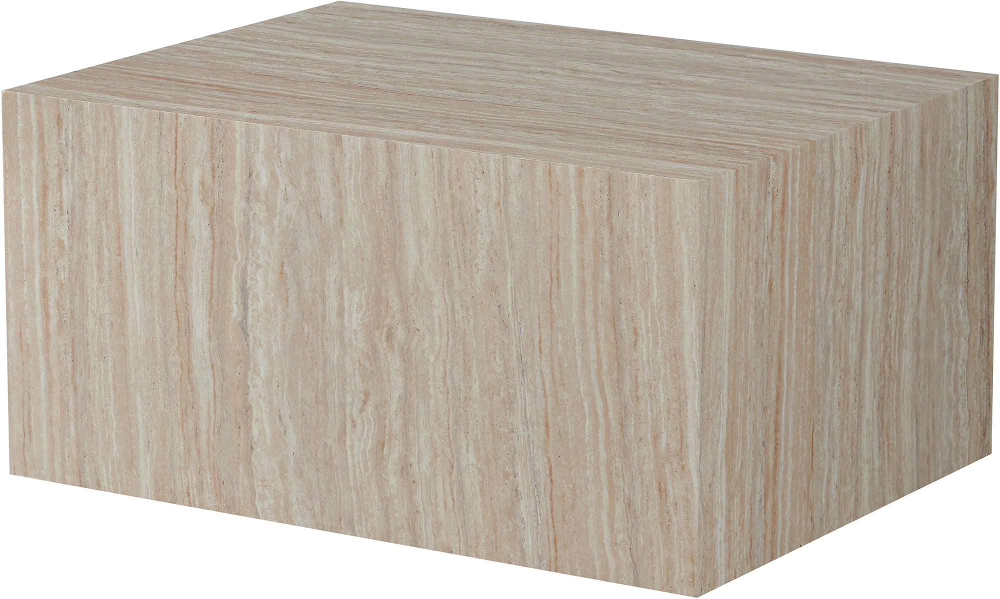
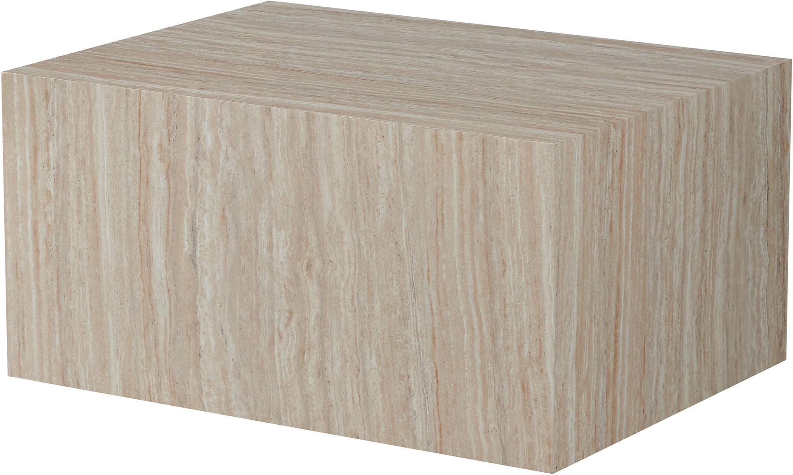
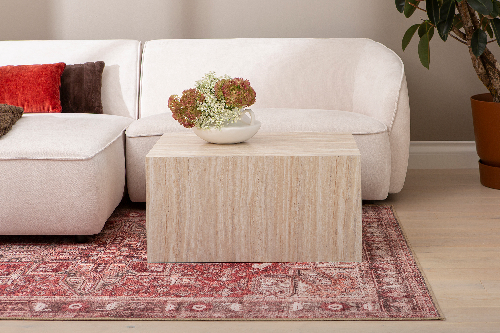
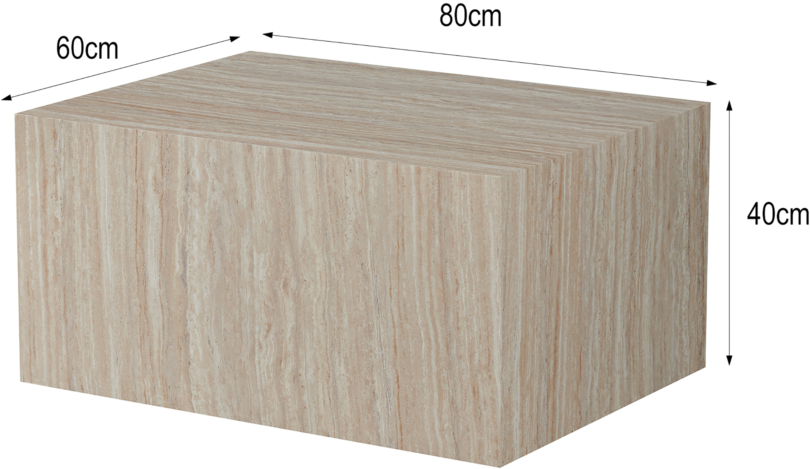
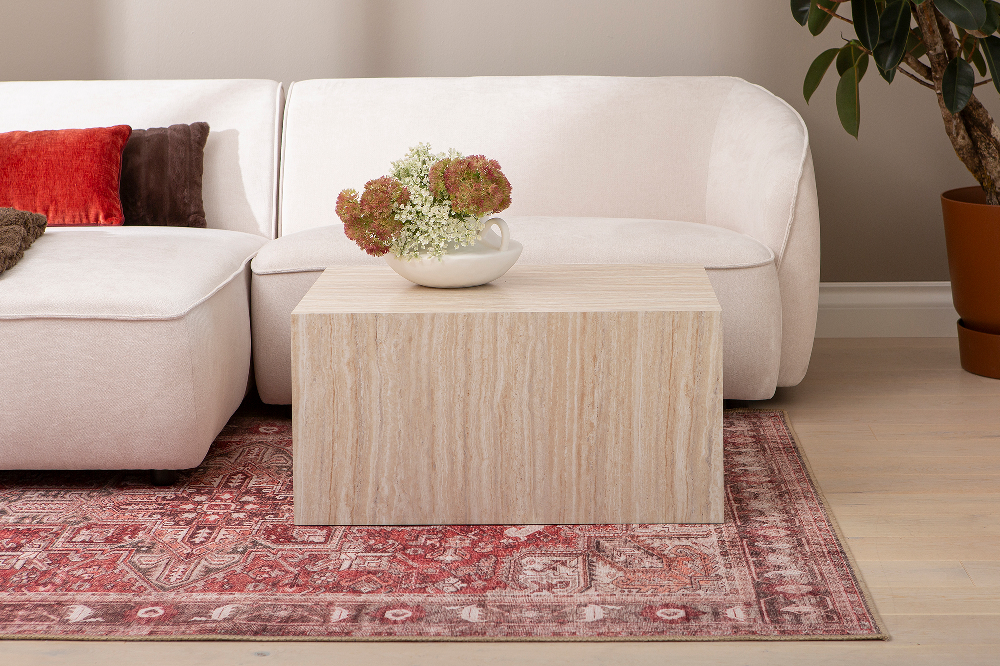
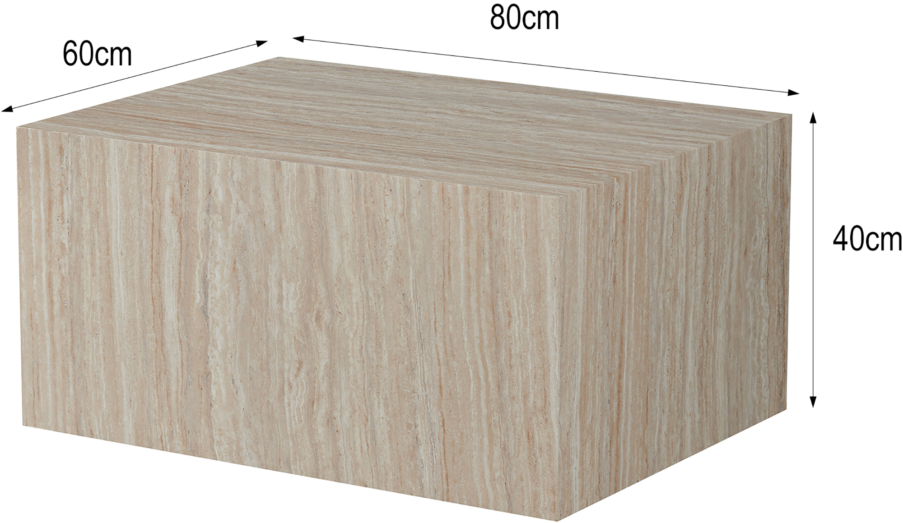

Reef sohvapöytä 80x60 beige
198073


 

 



Kuvaus
Reef sohvapöytä – ajaton ja tyylikäs valinta beige-sävyssä Reef sohvapöytä tuo kotiin modernia eleganssia ja luonnonläheistä ilmettä. Sen beige sävy on täydellinen lisä niin skandinaaviseen, minimalistiseen kuin boheemiin sisustukseen. Monikäyttöinen ja ajaton muotoilu tekee siitä ihanteellisen valinnan olohuoneeseen, jossa yhdistyvät tyyli ja käytännöllisyys. Kompakti koko ja monipuolinen muotoilu Reef sohvapöydän mitat 80 x 60 cm tekevät siitä sopivan sekä suurempiin että pienempiin tiloihin. Kompakti mutta riittävän tilava pöytä tarjoaa runsaasti laskutilaa arjen tarpeisiin – olipa kyseessä kahvikuppi, sisustuslehdet tai kaunis koriste-esine. Sen elegantti muotoilu sulautuu kauniisti erilaisiin sisustustyyleihin ja toimii katseenvangitsijana olohuoneessa. Kestävä ja helppohoitoinen materiaali Laadukas rakenne takaa Reef sohvapöydän kestävyyden. Sen helppohoitoinen pinta tekee siitä erinomaisen valinnan arjen käyttöön, sillä se on vaivaton pyyhkiä puhtaaksi. Beigen neutraali sävy tuo sisustukseen lämpöä ja harmoniaa, mikä tekee siitä täydellisen valinnan kodikkaaseen ja tyylikkääseen sisustukseen. Loistava hintalaatusuhde Reef sohvapöytä yhdistää tyylikkään designin ja käytännöllisyyden edulliseen hintaan. Sen ajaton ulkonäkö ja kestävä rakenne takaavat, että se säilyttää ilmeensä vuodesta toiseen.
Tekniset tiedot
| Koko | 80 × 60 |
|---|---|
| Väri | Beige |